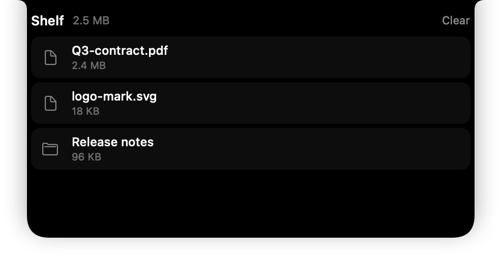
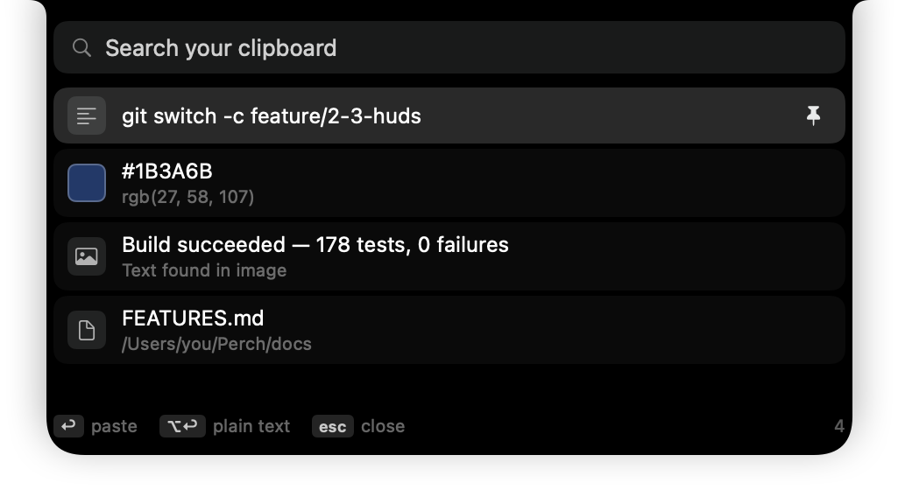

Free and open source, forever
Everyone else charges for your notch.This one is the source code.
Perch turns the MacBook camera notch into a live, interactive surface. Three modules are built today — music, a file shelf and a searchable clipboard — and fifteen more are on the way, every one free. No licence key, no account, no telemetry, and no network request beyond checking for updates.
No licence key · No account · No subscription, ever
Click the island to collapse it, the way it behaves on your Mac.
Everything, one glance up
Live activities thatactually live.
Music, the shelf, your clipboard, the next meeting, a timer. One island becomes whatever matters right now, then gets out of the way.
Accounts. Servers. Analytics.
Everything happens on your Mac. The only request Perch ever makes is to its own update feed, and you can turn that off too.
Modules, each switchable
Against a paid field that averages six. Turn one off and it stops existing — no observer, no timer, no CPU. Run Perch as a music strip or as the whole hub.
Forever, and the source too
MIT licensed on GitHub. No Pro tier, no licence key in the codebase, nothing held back for a version 2.
The Shelf
Drag it up.Drop it anywhere.
Files parked at the top of your screen stay there while you switch apps, change Spaces, or go full screen. Drag them back out into Mail, Slack, Finder, wherever. No window juggling.

Clipboard
Copy anything.Find it in one keystroke.
Text, links, colours and images all land in a searchable history you can pin. Password managers and concealed pasteboard types are excluded by default. It never leaves the app's own container.

Meetings
Join, mute, leave.Without finding the window.
Your next event counts down in the notch and joins in one click — Meet, Zoom, Teams, Webex, Around and Whereby. Once you are in a Zoom call, mute, camera and leave stay up there while you work in something else. Between two meetings the module is not running any code at all: it works out the exact next moment the answer can change, and sleeps until then.
The call controls drive the meeting app’s own menu bar, so the island and the app can never disagree about whether you are muted. Zoom is the one we have verified; Teams and Webex are best effort and say so when they cannot find their menus. Browser meetings — Meet, Around, Whereby — get the join button but no controls, because a browser tab has no menu bar to drive.
Focus
The timer counts downwhere you already look.
A Pomodoro in the notch, not in a window and not as a string in the menu bar. Close the lid for forty minutes and it is finished when you open it — nothing was counting, so there is nothing to catch up. When a session ends it takes the island from whatever is playing, and the streak counts days, not sessions: four on Tuesday is one day.
HUDs
One overlay,not two.
Volume, brightness, charging, Bluetooth, Focus and the camera-in-use dot, in the notch instead of stamped over whatever you were looking at. Perch suspends the macOS overlay while the module is on and puts it back the instant you switch it off or quit — nothing is killed, nothing is changed on disk. Each of the six is individually switchable.
Notifications
Nine messages,one line.
Notifications mirror into the island grouped by app, so a burst from one person is one entry saying nine rather than nine fighting over the notch. Reply without leaving what you are doing — Perch types into the banner’s own reply field, so it works wherever macOS offers one. Anything that arrives during a focus session is held, not dropped, and comes back when the session ends.
macOS has no API that hands one app another app’s notifications. The other way in is the notification database, which sits behind Full Disk Access — so Perch reads the banner through Accessibility instead, and never asks for Full Disk Access. It follows that Perch mirrors what is on screen and nothing more: no history, nothing read from disk, and Do Not Disturb needs no handling at all, because a banner macOS does not draw is one Perch never sees.
Battery
The Mac, andeverything on it.
Charge, power source and time remaining for the Mac; left, right and case for AirPods; every mouse, keyboard and trackpad that reports a level. One low warning per discharge cycle — not one every time the number wobbles back across the line. There is no timer in it: macOS pushes the changes, and the accessories are re-read when you open the island.
System stats · nobody else has this
Your whole Mac,in the notch.
CPU, GPU, memory, disk, network, temperature and fan speed — a glance up instead of opening Activity Monitor. Set a threshold and the notch tells you when a build pegs every core or the disk drops under 10 GB. Not one of the seven apps we compared has a system monitor.
Camera
See yourselfbefore they do.
A live preview under the notch that opens by itself in the last seconds before a meeting starts. Mirror it, reshape it, or pin it as a floating pill while you present. No frame is ever written to disk unless you press snapshot, and the green light goes out within half a second of closing — that is a test in the suite, not a promise in a privacy policy.
That promise is kept by construction rather than by care. A running preview has no output attached to the capture session at all — only a preview layer, which renders from the device and hands Perch nothing — so there is no frame to keep and none to write. Closing removes the session’s inputs rather than only stopping it, because stopping alone leaves the device held and the light on. And nothing opens a camera except the preview appearing: switching the module on and launching the app both open nothing.
Every Mac
No notch?Still works.
On a Mac mini, a Studio, an iMac or any external display, Perch draws a floating island at the top of the screen. It never paints a fake notch over your wallpaper. And it runs on macOS 13 Ventura, which most of the paid apps dropped.
What it doesn't do yet
Every other site in this category lists only what ships. Here is the other half, because you will find out anyway and it may as well be from us.
Voice typing
On-device dictation is the hardest thing on the roadmap and it is not in 1.0. Two of the paid apps have it and Perch does not, yet.
Up Next and synced lyrics
macOS exposes no local interface that reports another app's play queue or word-by-word lyrics. A browser tab has no queue to read. We would rather say so than ship a panel that is empty for most people.
The audio visualiser is not a spectrum analyser
It reflects playback, not amplitude. Reading the real signal means Screen Recording permission and a capture session running the whole time music plays — for decoration. We said no.
Anything that needs an account
No cloud sync of your clipboard or shelf, no iPhone companion, no AI summaries. All three would mean a server, and a server means a bill, and a bill is how free apps stop being free.
Animation polish, on day one
Alcove's motion is better than ours is at launch. We know, we have used it, and the gap is a matter of iteration rather than architecture. Watch the repo.
A Mac App Store build
Reading pasteboard changes, driving the Accessibility API and reading IOKit sensors are all impossible inside the App Sandbox. Perch is signed, notarised, and installed directly or with Homebrew.
Compare
Everyone elsecharges for this.
Apple ships the idea free on every iPhone. On the Mac it became a $9–25 category. Prices checked September 2026 — confirm on each vendor's own site, they move faster than web pages.
| Capability | Perch | Boring Notch | Seam | Alcove | NotchNook | DynamicLake Pro | NotchBay | TopNotch |
|---|---|---|---|---|---|---|---|---|
| Price | Free | Free | $19.90 | ~$15–17 | $25 or $3/mo | $13.99 | $9 | Free |
| Open source | Yes | Yes | — | — | — | — | — | — |
| Minimum macOS | 13 | 13 | 14 | 14 | 14 | 13–14 | 14 | 12 |
| Media controls | Yes | Yes | Yes | Yes | Yes | Yes | Yes | — |
| File shelf | Yes | Basic | Yes | — | Yes | Yes | Yes | — |
| Clipboard history | Yes | — | — | — | — | Files only | 60 clips | — |
| Focus timer | Yes | — | Yes | — | — | — | Yes | — |
| Meeting join & controls | Yes | — | Calendar | — | Peek | Activities | Yes | — |
| Notification mirroring | Yes | — | — | — | — | Yes | Yes | — |
| System HUDs | Yes | — | Yes | Yes | Yes | Yes | Yes | — |
| Battery & accessories | Yes | — | Yes | Yes | — | Alerts | Yes | — |
| System stats | Yes | — | — | — | — | — | — | — |
| Camera beyond a mirror | Yes | — | — | — | — | — | — | — |
| Works without a notch | Yes | Yes | Yes | — | — | Partial | Yes | n/a |
| Telemetry | None | None | None | Not stated | Not stated | Not stated | Not stated | None |
TopNotch is listed for completeness but solves the opposite problem — it hides the notch by blacking out the menu bar. If that's what you want, use it. It's very good at it.
How it works
Open it once.It does the rest.
One app. One launch.
Perch is a single native Swift app. No account, no setup wizard, no Electron runtime sitting in your menu bar. Open it once and an island settles in around the notch. That's the whole setup.
Nothing you didn't allow.
Each module asks for its own macOS permission the first time you switch it on — the calendar for your next meeting, accessibility for the volume overlay. Grant what you want, skip the rest. Nothing is requested at launch.
Your day, in the notch.
Play a song, join a call, copy a link, park a file. Each one becomes a live activity above the keyboard. Glance to check it, hover to peek, click to expand — right where your eyes already are.
Then it disappears.
When nothing needs you, the island goes quiet: a black sliver shaped like the notch it lives in, doing no work at all. Status flashes surface for a second, then fade. You stop noticing it's running. That's the point.
FAQ
Asked, answered.
Is there a Dynamic Island for Mac?
Is it really free, or free until version 2?
Does it work on Macs without a notch, or on external displays?
Will it drain my battery?
Why macOS 13 when everyone else needs 14?
Can I run it alongside another notch app?
Is it safe to install?
Open source
Don't take our word for it.Read it.
Every claim on this page is checkable, because the whole thing is on GitHub under an MIT licence — the clipboard code, the camera teardown, the list of what each module is allowed to touch. There is no second repository with the real version in it.
Your copyright stays yours
No contributor licence agreement to sign. You keep your copyright, and nobody can relicense the project out from under the people who built it.
The roadmap is public
docs/PLAN.md says what is being built and in what order. docs/FEATURES.md records what each module does and what it doesn't, including the parts macOS makes impossible.
Decisions are written down
Every awkward choice has a record in docs/adr — why the media data comes from a private framework, why the clipboard is the one thing in the app that polls.
Build it yourself
Three commands: clone, make bootstrap, make run. If the build you download ever disagrees with the source, the source is the one that is right.
Every commit is tested
Lint, the full suite on two macOS versions, and a universal build — all four have to pass before anything merges. The build artefacts are downloadable from Actions.
Bug reports from odd setups
The most useful thing you can send is a display arrangement we have never seen. Two externals with the lid shut, a rotated portrait monitor, Sidecar — that is where notch apps break.
Price
No price.Yours forever.
0.4.0, and not yet signed. Universal — Apple Silicon and Intel. macOS will refuse it on a double-click, so right-click the app → Open and confirm once; you only do that the first time. That is Gatekeeper doing its job, and it stops once there is a certificate to sign with. All builds · build from source
Seven of eighteen modules are built so far — Now Playing, the Shelf, the Clipboard, the Battery, the HUDs, the Focus timer and the Calendar, plus the island itself. The list below is what 1.0 is aiming at; the roadmap says when.
- Searchable clipboard history with pinning
- File shelf that survives app switches
- Meeting join, mute and leave controls
- System HUD replacement and battery for every accessory
- No accounts, no telemetry, no cloud
macOS 13 Ventura or later · Apple Silicon and Intel · signed and notarised
brew install --cask perchOr build it yourself — clone the repo and run make run.